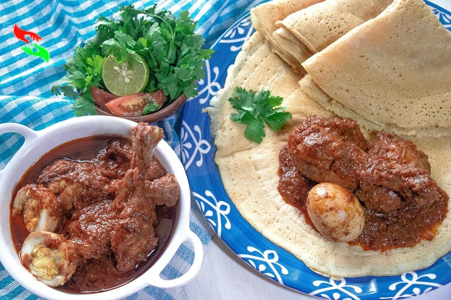

My Favorite Dishes
Cassava Leaf Stew/Sauce, Sierra Leone Dish

- Prep Time 15 minutes
- Cook Time 1 hour
- Author Darlene at International Cuisine
Ingredients
1 lb. beef boneless cut into bite sized cubes1 Tablespoon oil
2 onions peeled and roughly chopped divided
2 stock cubes divided Maggi
3 cups of water divided
2 medium eggplants peeled and roughly chopped
3 Tablespoons dried smoked fish flakes or 3 tbsp crayfish powder
Scotch bonnet or other chilli to your heat tolerance
5 Tablespoon peanut butter smooth
3/4 cup palm oil
1 lb. pounded cassava leaves
salt and pepper to taste
Instructions
Add the beef, 1 Tablespoon of onion, a quarter of the maggi stock cube, oil, 1/3 cup of water and a pinch of salt to a pot, mix well, bring to the boil and reduce to a simmer for about 25 mins until the beef is cooked through. Reserve both the beef and the cooking liquid. While the beef is cooking add the eggplant, the remaining onion, fish flakes, chili and 2/3 cups of water into a high-powered blender and blend into a puree. Transfer the puree into a pot, add the remaining maggi stock cubes and water, peanut butter, and palm oil. Mix well and over high heat bring to the boil and then reduce to a simmer for 30 mins stirring occasionally. Then stir in the cassava leaves, and beef liquid, bring the boil and simmer for about 30 mins. 10 mins before the cassava leaves are done add in the beef, season well with any needed salt and pepper and cook till done. Serve over steaming rice.
Chicken Stew (Dorho Tsebhi), Eritrean/Ethiopian Dish
Ingredients
1/2 teaspoon turmeric2 cloves garlic, coarsely chopped
2 yellow onion, chopped
5 spoons Berbere
4 cloves of Garlic
1/2 tablespoon black pepper
1/2 tablespoon basil
5 hard boiled eggs
1 lb of fresh chicken
2 cups of water
Boil the eggs in a pot until eggs are softened. In another pot, add the chopped onions and garlic and cook for 5 mins. When it gets dry, add oil. Include the chicken and stir occasionally. Add water when it gets dry. Spice up the pot with berbere and continue stirring (occasionally) for the next 10 mins. Mix the other spices of your choosing into the pot and add water if you want.